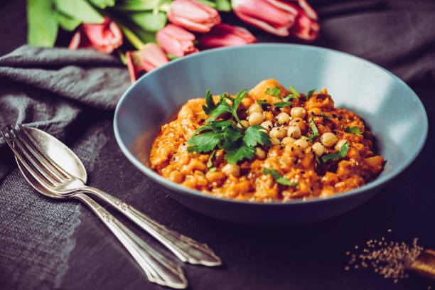

Chana Masala (Savory Indian Chick Peas)

Description
Ingredients
1 (1 inch) piece fresh ginger, peeled and chopped
4 cloves garlic, chopped, or more to taste
1 green chile pepper, seeded and chopped (Optional)
1 teaspoon coriander powder
½ teaspoon turmeric powder
1 (15 ounce) can chickpeas
1 teaspoon fresh cilantro leaves, for garnish, or more to taste
Steps
- Grind onion, tomato, ginger, garlic, and chile pepper together in a food processor into a paste.
- Heat olive oil in a large skillet over medium heat. Fry bay leaves in hot oil until fragrant, about 30 seconds. Pour the paste into the skillet and cook until the oil begins to separate from the mixture and is golden brown in color, 2 to 3 minutes. Season the mixture with chili powder, coriander, gram masala, turmeric, and salt; cook and stir until very hot, 2 to 3 minutes.
- Stir enough water into the mixture to get a thick gravy; bring to a boil and stir chickpeas into the gravy. Reduce heat to medium and cook until the chickpeas are heated through, 5 to 7 minutes. Garnish with cilantro.